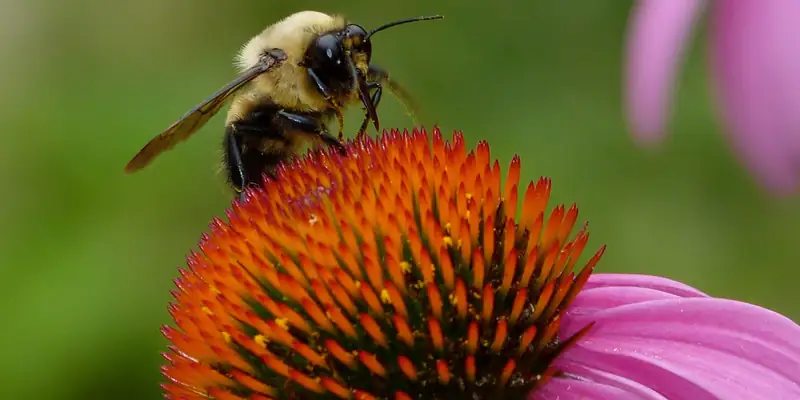
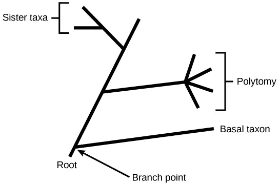
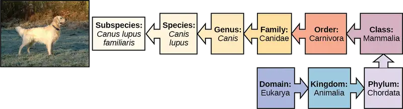
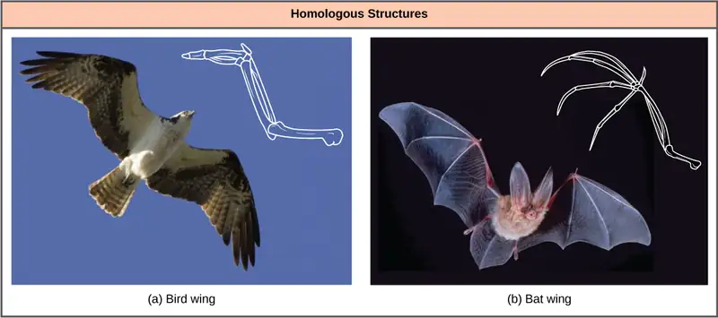
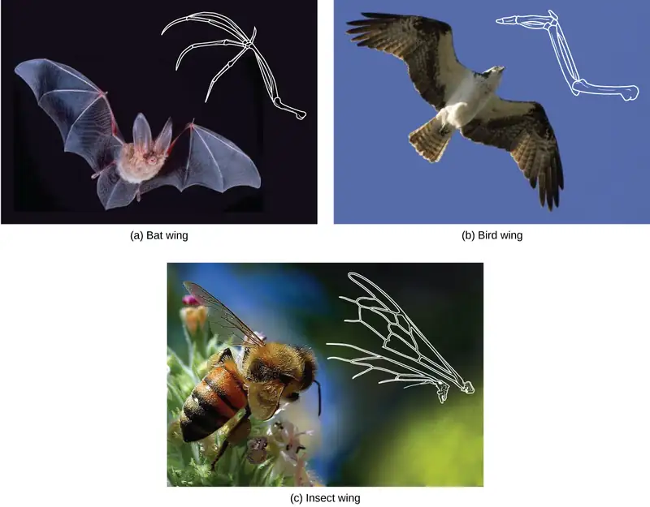
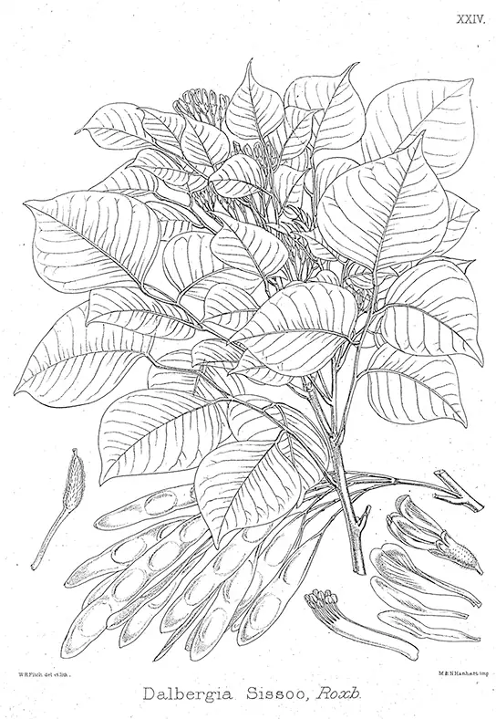
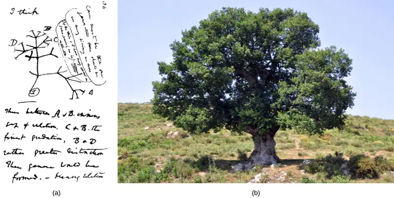
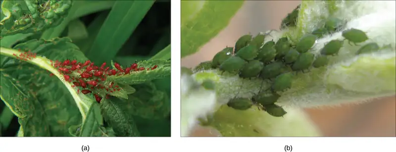
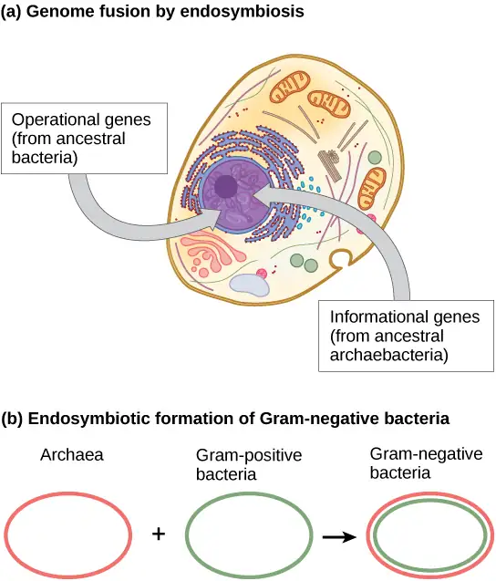
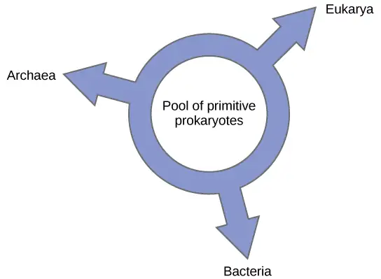

Chapter 20: Phylogenies and the History of Life¶
Introduction¶

This bee and Echinacea flower (Figure 20.1) could not look more different, yet they are related, as are all living organisms on Earth. By following pathways of similarities and changes—both visible and genetic—scientists seek to map the evolutionary past of how life developed from single-celled organisms to the tremendous collection of creatures that have germinated, crawled, floated, swum, flown, and walked on this planet.
20.1 Organizing Life on Earth¶
Learning Objectives
By the end of this section, you will be able to do the following:
- Discuss the need for a comprehensive classification system
- List the different levels of the taxonomic classification system
- Describe how systematics and taxonomy relate to phylogeny
- Discuss a phylogenetic tree's components and purpose
In scientific terms, phylogeny is the evolutionary history and relationship of an organism or group of organisms. A phylogeny describes the organism's relationships, such as from which organisms it may have evolved, or to which species it is most closely related. Phylogenetic relationships provide information on shared ancestry but not necessarily on how organisms are similar or different.
Phylogenetic Trees¶
Scientists use a tool called a phylogenetic tree to show the evolutionary pathways and connections among organisms. A phylogenetic tree is a diagram used to reflect evolutionary relationships among organisms or groups of organisms. Scientists consider phylogenetic trees to be a hypothesis of the evolutionary past since one cannot go back to confirm the proposed relationships. In other words, we can construct a “tree of life” to illustrate when different organisms evolved and to show the relationships among different organisms (Figure 20.2).
Unlike a taxonomic classification diagram, we can read a phylogenetic tree like a map of evolutionary history. Many phylogenetic trees have a single lineage at the base representing a common ancestor. Scientists call such trees rooted, which means there is a single ancestral lineage (typically drawn from the bottom or left) to which all organisms represented in the diagram relate. Notice in the rooted phylogenetic tree that the three domains— Bacteria, Archaea, and Eukarya—diverge from a single point and branch off. The small branch that plants and animals (including humans) occupy in this diagram shows how recent and miniscule these groups are compared with other organisms. Unrooted trees do not show a common ancestor but do show relationships among species.
![The phylogenetic tree in part a is rooted and resembles a living tree, with a common ancestor indicated as the base of the trunk. Two branches form from the trunk. The left branch leads to the domain Bacteria. The right branch branches again, giving rise to Archaea and Eukarya. Smaller branches within each domain indicate the groups present in that domain. The phylogenetic tree in part B is unrooted. It does not resemble a living tree; rather, groups of organisms within the Archaea, Eukarya, and Bacteria domains are arranged in a circle. Lines connect the groups within each domain. The groups within Archaea and Eukarya are then connected together. A line from the Archaea/ Eukarya domains, and another from the Bacteria meet in the center of the circle. There is no root, and therefore no indication of which domain arose first.](img/figure-20-01-01.webp)
In a rooted tree, the branching indicates evolutionary relationships (Figure 20.3). The point where a split occurs, a branch point, represents where a single lineage evolved into a distinct new one. We call a lineage that evolved early from the root that remains unbranched a basal taxon. We call two lineages stemming from the same branch point sister taxa. A branch with more than two lineages is a polytomy and serves to illustrate where scientists have not definitively determined all of the relationships. Note that although sister taxa and polytomy do share an ancestor, it does not mean that the groups of organisms split or evolved from each other. Organisms in two taxa may have split at a specific branch point, but neither taxon gave rise to the other.

The diagrams above can serve as a pathway to understanding evolutionary history. We can trace the pathway from the origin of life to any individual species by navigating through the evolutionary branches between the two points. Also, by starting with a single species and tracing back towards the "trunk" of the tree, one can discover species' ancestors, as well as where lineages share a common ancestry. In addition, we can use the tree to study entire groups of organisms.
Another point to mention on phylogenetic tree structure is that rotation at branch points does not change the information. For example, if a branch point rotated and the taxon order changed, this would not alter the information because each taxon's evolution from the branch point was independent of the other.
Many disciplines within the study of biology contribute to understanding how past and present life evolved over time; these disciplines together contribute to building, updating, and maintaining the “tree of life.” Systematics is the field that scientists use to organize and classify organisms based on evolutionary relationships. Researchers may use data from fossils, from studying the body part structures, or molecules that an organism uses, and DNA analysis. By combining data from many sources, scientists can construct an organism's phylogeny. Since phylogenetic trees are hypotheses, they will continue to change as researchers discover new types of life and learn new information.
Limitations of Phylogenetic Trees¶
It may be easy to assume that more closely related organisms look more alike, and while this is often the case, it is not always true. If two closely related lineages evolved under significantly varied surroundings, it is possible for the two groups to appear more different than other groups that are not as closely related. For example, the phylogenetic tree in Figure 20.4 shows that lizards and rabbits both have amniotic eggs; whereas, frogs do not. Yet lizards and frogs appear more similar than lizards and rabbits.
![The ladder-like phylogenetic tree starts with a trunk at the left. A question next to the trunk asks whether a vertebral column is present. If the answer is no, a branch leads downward to lancelet. If the answer is yes, a branch leads upward to another question: is a hinged jaw present? If the answer is no, a branch leads downward to lamprey. If the answer is yes, a branch leads upward to another question: are legs present? If the answer is no, a branch leads downward to fish. If the answer is yes, a branch leads upward to another question: does the egg have amnion? If the answer is no, the branch leads downward to frog. If the answer is yes, the branch leads upward to another question: is hair present? If the answer is no, the branch leads downward to lizard. If the answer is yes, the branch leads upward to rabbit.](img/figure-b20-01-05.webp)
Another aspect of phylogenetic trees is that, unless otherwise indicated, the branches do not account for length of time, only the evolutionary order. In other words, a branch's length does not typically mean more time passed, nor does a short branch mean less time passed— unless specified on the diagram. For example, in Figure 20.4, the tree does not indicate how much time passed between the evolution of amniotic eggs and hair. What the tree does show is the order in which things took place. Again using Figure 20.4, the tree shows that the oldest trait is the vertebral column, followed by hinged jaws, and so forth. Remember that any phylogenetic tree is a part of the greater whole, and like a real tree, it does not grow in only one direction after a new branch develops. Thus, for the organisms in Figure 20.4, just because a vertebral column evolved does not mean that invertebrate evolution ceased. It only means that a new branch formed. Also, groups that are not closely related, but evolve under similar conditions, may appear more phenotypically similar to each other than to a close relative.
Interactive
Head to this website to see interactive exercises that allow you to explore the evolutionary relationships among species.
Classification Levels¶
Taxonomy (which literally means “arrangement law”) is the science of classifying organisms to construct internationally shared classification systems with each organism placed into increasingly more inclusive groupings. Think about a grocery store's organization. One large space is divided into departments, such as produce, dairy, and meats. Then each department further divides into aisles, then each aisle into categories and brands, and then finally a single product. We call this organization from larger to smaller, more specific categories a hierarchical system.
The taxonomic classification system (also called the Linnaean system after its inventor, Carl Linnaeus, a Swedish botanist, zoologist, and physician) uses a hierarchical model. Moving from the point of origin, the groups become more specific, until one branch ends as a single species. For example, after the common beginning of all life, scientists divide organisms into three large categories called domains: Bacteria, Archaea, and Eukarya. Within each domain is a second category called a kingdom. After kingdoms, the subsequent categories of increasing specificity are: phylum, class, order, family, genus, and species (Figure 20.5).

The kingdom Animalia stems from the Eukarya domain. Figure 20.5 above shows the classification for the common dog. Therefore, the full name of an organism technically has eight terms. For the dog it is: Eukarya, Animalia, Chordata, Mammalia, Carnivora, Canidae, Canis, and lupus. Notice that each name is capitalized except for species, and the genus and species names are italicized. Scientists generally refer to an organism only by its genus and species, which is its two-word scientific name, or binomial nomenclature. Therefore, the scientific name of the dog is Canis lupus. The name at each level is also a taxon. In other words, dogs are in order Carnivora. Carnivora is the name of the taxon at the order level; Canidae is the taxon at the family level, and so forth. Organisms also have a common name that people typically use, in this case, dog. Note that the dog is additionally a subspecies: the “familiaris” in Canis lupus familiaris. Subspecies are members of the same species that are capable of mating and reproducing viable offspring, but they are separate subspecies due to geographic or behavioral isolation or other factors.
Figure 20.6 shows how the levels move toward specificity with other organisms. Notice how the dog shares a domain with the widest diversity of organisms, including plants and butterflies. At each sublevel, the organisms become more similar because they are more closely related. Historically, scientists classified organisms using characteristics, but as DNA technology developed, they have determined more precise phylogenies.
Visual Connection
![Illustration shows the taxonomic groups shared by various species. All of the organisms shown are in the domain Eukarya: plants, insects, fish, rabbits, cats, foxes, jackals wolves, and dogs. Of these, insects, fish, rabbits, cats, foxes, jackals, wolves and dogs are in the kingdom Animalia. Within the kingdom Animalia, fish, rabbits, cats, foxes, jackals, wolves, and dogs are in the phylum Chordata. Rabbits, cats, foxes, jackals, wolves, and dogs are in the class Mammalia. Cats, foxes, jackals, wolves, and dogs are in the order Carnivora. Foxes, jackals, wolves, and dogs are in the family Canidae. Jackals, wolves and dogs are in the genus Canis. Wolves and Dogs have the species name Canis lupus. Dogs have the subspecies name Canis lupus familiaris.](img/figure-20-01-05.webp)
At what levels are cats and dogs part of the same group?
Interactive
Visit this website to explore the classifications of thousands of organisms. This reference site contains about 10% of the described species on the planet.
Recent genetic analysis and other advancements have found that some earlier phylogenetic classifications do not align with the evolutionary past; therefore, researchers must make changes and updates as new discoveries occur. Recall that phylogenetic trees are hypotheses and are modified as data becomes available. In addition, classification historically has focused on grouping organisms mainly by shared characteristics and does not necessarily illustrate how the various groups relate to each other from an evolutionary perspective. For example, despite the fact that a hippopotamus resembles a pig more than a whale, the hippopotamus may be the whale's closest living relative.
20.2 Determining Evolutionary Relationships¶
Learning Objectives
By the end of this section, you will be able to do the following:
- Compare homologous and analogous traits
- Discuss the purpose of cladistics
- Describe maximum parsimony
Scientists must collect accurate information that allows them to make evolutionary connections among organisms. Similar to detective work, scientists must use evidence to uncover the facts. In the case of phylogeny, evolutionary investigations focus on two types of evidence: morphologic (form and function) and genetic.
Two Options for Similarities¶
In general, organisms that share similar physical features and genomes are more closely related than those that do not. We refer to such features that overlap both morphologically (in form) and genetically as homologous structures. They stem from developmental similarities that are based on evolution. For example, the bones in bat and bird wings have homologous structures. This is an example of morphological homology (Figure 20.7).

Notice it is not simply a single bone, but rather a grouping of several bones arranged in a similar way. The more complex the feature, the more likely any kind of overlap is due to a common evolutionary past. Imagine two people from different countries both inventing a car with all the same parts and in exactly the same arrangement without any previous or shared knowledge. That outcome would be highly improbable. However, if two people both invented a hammer, we can reasonably conclude that both could have the original idea without the help of the other. The same relationship between complexity and shared evolutionary history is true for homologous structures in organisms.
Misleading Appearances¶
Some organisms may be very closely related, even though a minor genetic change caused a major morphological difference to make them look quite different. Similarly, unrelated organisms may be distantly related, but appear very much alike. This usually happens because both organisms share common adaptations that evolved within similar environmental conditions. When similar characteristics occur because of environmental constraints and not due to a close evolutionary relationship, it is an analogy or homoplasy. For example, insects use wings to fly like bats and birds, but the wing structure and embryonic origin is completely different. These are analogous structures (Figure 20.8). On the other side, the bird and bat wings are homologous because the bones are inherited from a common ancestor, while the wings themselves are analogous as they evolved independently.
Similar traits can be either homologous or analogous. Homologous structures share a similar embryonic origin. Analogous organs have a similar function. For example, the bones in a whale's front flipper are homologous to the bones in the human arm. These structures are not analogous. A butterfly or bird's wings are analogous but not homologous. Scientists must determine which type of similarity a feature exhibits to decipher the organisms' phylogeny.

Interactive
This website has several examples to show how appearances can be misleading in understanding organisms' phylogenetic relationships.
Molecular Comparisons¶
The advancement of DNA technology has given rise to molecular systematics, which is use of molecular data in taxonomy and biological geography (biogeography). New computer programs not only confirm many earlier classified organisms, but also uncover previously made errors. As with physical characteristics, even the DNA sequence can be tricky to read in some cases. For some situations, two very closely related organisms can appear unrelated if a mutation occurred that caused a shift in the genetic code. Inserting or deleting a mutation would move each nucleotide base over one place, causing two similar codes to appear unrelated.
Sometimes two segments of DNA code in distantly related organisms randomly share a high percentage of bases in the same locations, causing these organisms to appear closely related when they are not. For both of these situations, computer technologies help identify the actual relationships, and, ultimately, the coupled use of both morphologic and molecular information is more effective in determining phylogeny.
Evolution Connection: Why Does Phylogeny Matter?
Evolutionary biologists could list many reasons why understanding phylogeny is important to everyday life in human society. For botanists, phylogeny acts as a guide to discovering new plants that can be used to benefit people. Think of all the ways humans use plants—food, medicine, and clothing are a few examples. If a plant contains a compound that is effective in treating cancer, scientists might want to examine all of the compounds for other useful drugs.
A research team in China identified a DNA segment that they thought to be common to some medicinal plants in the family Fabaceae (the legume family) (Figure 20.9). They worked to identify which species had this segment. After testing plant species in this family, the team found a DNA marker (a known location on a chromosome that enabled them to identify the species) present. Then, using the DNA to uncover phylogenetic relationships, the team could identify whether a newly discovered plant was in this family and assess its potential medicinal properties.

Building Phylogenetic Trees¶
How do scientists construct phylogenetic trees? After they sort the homologous and analogous traits, scientists often organize the homologous traits using cladistics. This system sorts organisms into clades: groups of organisms that descended from a single ancestor. For example, in Figure 20.10, all the organisms in the orange region evolved from a single ancestor that had amniotic eggs. Consequently, these organisms also have amniotic eggs and make a single clade, or a monophyletic group. Clades must include all descendants from a branch point.
Visual Connection
![The illustration shows the V-shaped Vertebrata clade, which includes lampreys, fish, lizards, rabbits, and humans. Lampreys are at the left tip of the V, and humans are at the right tip. Three more lines are drawn parallel to the lamprey line; each of these lines starts further up the right arm of the V than the last. At the end of each line, from left to right, are fish, lizards, and rabbits. Lizards, rabbits, and humans are in the clade Amniota, which form a small V nested in the upper right-hand corner of the V-shaped Vertebrata clade.](img/figure-20-02-04-43b5.webp)
Which animals in this figure belong to a clade that includes animals with hair? Which evolved first, hair or the amniotic egg?
Clades can vary in size depending on which branch point one references. The important factor is that all organisms in the clade or monophyletic group stem from a single point on the tree. You can remember this because monophyletic breaks down into “mono,” meaning one, and “phyletic,” meaning evolutionary relationship. Figure 20.11 shows various clade examples. Notice how each clade comes from a single point; whereas, the non-clade groups show branches that do not share a single point.
Visual Connection
![Illustrations show a phylogenetic tree that includes eukaryotic species. A central line represents the trunk of the tree. From this trunk, various groups branch. In order from the bottom, these are diplomonads, microsporidia, trichomonads, flagellates, entamoebae, slime molds, and ciliates. At the top of the tree, animals, fungi and plants all branch from the same point and are shaded to show that they belong in the same clade. Flagellates are on a branch by themselves, and they also form their own clade and are shaded to show this. In another image, Flagellates and ciliates are shaded to show that they branch from different points on the tree and are not considered clades. Likewise, a grouping of animals and plants but not fungi would not be considered a clade. A clade cannot exclude a branch originating at the same point as the others.](img/figure-20-02-05.webp)
What is the largest clade in this diagram?
Shared Characteristics¶
Organisms evolve from common ancestors and then diversify. Scientists use the phrase “descent with modification” because even though related organisms have many of the same characteristics and genetic codes, changes occur. This pattern repeats as one goes through the phylogenetic tree of life:
- A change in an organism's genetic makeup leads to a new trait which becomes prevalent in the group.
- Many organisms descend from this point and have this trait.
- New variations continue to arise: some are adaptive and persist, leading to new traits.
- With new traits, a new branch point is determined (go back to step 1 and repeat).
If a characteristic is found in the ancestor of a group, it is considered a shared ancestral character because all of the organisms in the taxon or clade have that trait. The vertebrate in Figure 20.10 is a shared ancestral character. Now consider the amniotic egg characteristic in the same figure. Only some of the organisms in Figure 20.10 have this trait, and to those that do, it is called a shared derived character because this trait derived at some point but does not include all of the ancestors in the tree.
The tricky aspect to shared ancestral and shared derived characters is that these terms are relative. We can consider the same trait one or the other depending on the particular diagram that we use. Returning to Figure 20.10, note that the amniotic egg is a shared ancestral character for lizards, rabbits, and humans, while having hair is a shared derived character only for humans and rabbits. For the Amniotes as a group, however, the amniotic egg is a shared derived character that is not seen in fish. These terms help scientists distinguish between clades in building phylogenetic trees.
Choosing the Right Relationships¶
Imagine being the person responsible for organizing all department store items properly—an overwhelming task. Organizing the evolutionary relationships of all life on Earth proves much more difficult: scientists must span enormous blocks of time and work with information from long-extinct organisms. Trying to decipher the proper connections, especially given the presence of homologies and analogies, makes the task of building an accurate tree of life extraordinarily difficult. Add to that advancing DNA technology, which now provides large quantities of genetic sequences for researchers to use and analyze. Taxonomy is a subjective discipline: many organisms have more than one connection to each other, so each taxonomist will decide the order of connections.
To aid in the tremendous task of describing phylogenies accurately, scientists often use the concept of maximum parsimony, which means that events occurred in the simplest, most obvious way. For example, if a group of people entered a forest preserve to hike, based on the principle of maximum parsimony, one could predict that most would hike on established trails rather than forge new ones.
For scientists deciphering evolutionary pathways, the same idea is used: the pathway of evolution probably includes the fewest major events that coincide with the evidence at hand. Starting with all of the homologous traits in a group of organisms, scientists look for the most obvious and simple order of evolutionary events that led to the occurrence of those traits.
Interactive
Head to this website to learn how researchers use maximum parsimony to create phylogenetic trees.
These tools and concepts are only a few strategies scientists use to tackle the task of revealing the evolutionary history of life on Earth. Recently, newer technologies have uncovered surprising discoveries with unexpected relationships, such as the fact that people seem to be more closely related to fungi than fungi are to plants. Sound unbelievable? As the information about DNA sequences grows, scientists will become closer to mapping the evolutionary history of all life on Earth.
20.3 Perspectives on the Phylogenetic Tree¶
Learning Objectives
By the end of this section, you will be able to do the following:
- Describe horizontal gene transfer
- Illustrate how prokaryotes and eukaryotes transfer genes horizontally
- Identify the web and ring models of phylogenetic relationships and describe how they differ from the original phylogenetic tree concept
Phylogenetic modeling concepts are constantly changing. It is one of the most dynamic fields of study in all biology. Over the last several decades, new research has challenged scientists’ ideas about how organisms are related. The scientific community has proposed new models of these relationships.
Many phylogenetic trees are models of the evolutionary relationship among species. Phylogenetic trees originated with Charles Darwin, who sketched the first phylogenetic tree in 1837 (Figure 20.12a). This served as a prototype for subsequent studies for more than a century. The phylogenetic tree concept with a single trunk representing a shared ancestry, with the branches representing the divergence of species from this ancestry, fits well with the structure of many common trees, such as the oak (Figure 20.12b). However, evidence from modern DNA sequence analysis and newly developed computer algorithms has caused skepticism about the standard tree model's validity in the scientific community.

Limitations to the Classic Model¶
Classical thinking about prokaryotic evolution, included in the classic tree model, is that species evolve clonally. That is, they produce offspring themselves with only random mutations causing the descent into the variety of modern-day and extinct species known to science. This view is somewhat complicated in eukaryotes that reproduce sexually, but the laws of Mendelian genetics explain the variation in offspring, again, to be a result of a mutation within the species. Scientists did not consider the concept of genes transferring between unrelated species as a possibility until relatively recently. Horizontal gene transfer (HGT), or lateral gene transfer, is the transfer of genes between unrelated species. HGT is an ever-present phenomenon, with many evolutionists postulating a major role for this process in evolution, thus complicating the simple tree model. Genes pass between species which are only distantly related using standard phylogeny, thus adding a layer of complexity to understanding phylogenetic relationships.
The various ways that HGT occurs in prokaryotes is important to understanding phylogenies. Although at present some do not view HGT as important to eukaryotic evolution, HGT does occur in this domain as well. Finally, as an example of the ultimate gene transfer, some scientists have proposed genome fusion theories between symbiotic or endosymbiotic organisms to explain an event of great importance—the evolution of the first eukaryotic cell, without which humans could not have come into existence.
Horizontal Gene Transfer¶
Horizontal gene transfer (HGT) is the introduction of genetic material from one species to another species by mechanisms other than the vertical transmission from parent(s) to offspring. These transfers allow even distantly related species to share genes, influencing their phenotypes. Scientists believe that HGT is more prevalent in prokaryotes, but that this process transfers only about 2% of the prokaryotic genome. Some researchers believe such estimates are premature: we must view the actual importance of HGT to evolutionary processes as a work in progress. As scientists investigate this phenomenon more thoroughly, they may reveal more HGT. Many scientists believe that HGT and mutation are (especially in prokaryotes) a significant source of genetic variation, which is the raw material in the natural selection process. These transfers may occur between any two species that share an intimate relationship (Table 20.1).
Table 20.1
| Prokaryotic and Eukaryotic HGT Mechanisms Summary | |||
|---|---|---|---|
| Mechanism | Mode of Transmission | Example | |
| Prokaryotes | transformation | DNA uptake | many prokaryotes |
| transduction | bacteriophage (virus) | bacteria | |
| conjugation | pilus | many prokaryotes | |
| gene transfer agents | phage-like particles | purple non-sulfur bacteria | |
| Eukaryotes | from food organisms | unknown | aphid |
| jumping genes | transposons | rice and millet plants | |
| epiphytes/parasites | unknown | yew tree fungi | |
| from viral infections | |||
HGT in Prokaryotes¶
HGT mechanisms are quite common in the Bacteria and Archaea domains, thus significantly changing the way scientists view their evolution. The majority of evolutionary models, such as in the Endosymbiont Theory, propose that eukaryotes descended from multiple prokaryotes, which makes HGT all the more important to understanding the phylogenetic relationships of all extant and extinct species. The Endosymbiont Theory purports that the eukaryotes' mitochondria and the green plants' chloroplasts and flagellates originated as free-living prokaryotes that invaded primitive eukaryotic cells and become established as permanent symbionts in the cytoplasm.
Microbiology students are well aware that genes transfer among common bacteria. These gene transfers between species are the major mechanism whereby bacteria acquire resistance to antibiotics. Classically, scientists believe that three different mechanisms drive such transfers.
- Transformation: bacteria takes up naked DNA
- Transduction: a virus transfers the genes
- Conjugation: a hollow tube, or pilus transfers genes between organisms
More recently, scientists have discovered a fourth gene transfer mechanism between prokaryotes. Small, virus-like particles, or gene transfer agents (GTAs) transfer random genomic segments from one prokaryote species to another. GTAs are responsible for genetic changes, sometimes at a very high frequency compared to other evolutionary processes. Scientists characterized the first GTA in 1974 using purple, non-sulfur bacteria. These GTAs, which are most likely derived from bacteriophage DNA inserted in a prokaryote that lost the ability to produce new bacteriophages, carry random DNA pieces from one organism to another. Controlled studies using marine bacteria have demonstrated GTAs' ability to act with high frequency. Scientists have estimated gene transfer events in marine prokaryotes, either by GTAs or by viruses, to be as high as 1013 per year in the Mediterranean Sea alone. GTAs and viruses are efficient HGT vehicles with a major impact on prokaryotic evolution.
As a consequence of this modern DNA analysis, the idea that eukaryotes evolved directly from Archaea has fallen out of favor. While eukaryotes share many features that are absent in bacteria, such as the TATA box (located in many genes' promoter region), the discovery that some eukaryotic genes were more homologous with bacterial DNA than Archaea DNA made this idea less tenable. Furthermore, scientists have proposed genome fusion from Archaea and Bacteria by endosymbiosis as the ultimate event in eukaryotic evolution.
HGT in Eukaryotes¶
Although it is easy to see how prokaryotes exchange genetic material by HGT, scientists initially thought that this process was absent in eukaryotes. After all, prokaryotes are but single cells exposed directly to their environment; whereas, the multicellular organisms' sex cells are usually sequestered in protected parts of the body. It follows from this idea that the gene transfers between multicellular eukaryotes should be more difficult. Scientists believe this process is rarer in eukaryotes and has a much smaller evolutionary impact than in prokaryotes. In spite of this, HGT between distantly related organisms is evident in several eukaryotic species, and it is possible that scientists will discover more examples in the future.
In plants, researchers have observed gene transfer in species that cannot cross-pollinate by normal means. Transposons or “jumping genes” have shown a transfer between rice and millet plant species. Furthermore, fungal species feeding on yew trees, from which the anti-cancer drug TAXOL® is derived from the bark, have acquired the ability to make taxol themselves, a clear example of gene transfer.
In animals, a particularly interesting example of HGT occurs within the aphid species (Figure 20.13). Aphids are insects that vary in color based on carotenoid content. Carotenoids are pigments that a variety of plants, fungi, and microbes produce, and they serve a variety of functions in animals, who obtain these chemicals from their food. Humans require carotenoids to synthesize vitamin A, and we obtain them by eating orange fruits and vegetables: carrots, apricots, mangoes, and sweet potatoes. Alternatively, aphids have acquired the ability to make the carotenoids on their own. According to DNA analysis, this ability is due to fungal genes transferring into the insect by HGT, presumably as the insect consumed fungi for food. A carotenoid enzyme, or desaturase, is responsible for the red coloration in certain aphids, and when mutation of this gene leads to formation of inactive enzyme, the aphids revert to their more common green color (Figure 20.13).

Genome Fusion and Eukaryote Evolution¶
Scientists believe the ultimate in HGT occurs through genome fusion between different prokaryote species when two symbiotic organisms become endosymbiotic. This occurs when one species is taken inside another species' cytoplasm, which ultimately results in a genome consisting of genes from both the endosymbiont and the host. This mechanism is an aspect of the Endosymbiont Theory, which most biologists accept as the mechanism whereby eukaryotic cells obtained their mitochondria and chloroplasts. However, the role of endosymbiosis in developing the nucleus is more controversial. Scientists believe that nuclear and mitochondrial DNA have different (separate) evolutionary origins, with the mitochondrial DNA being derived from the bacteria's circular genomes engulfed by ancient prokaryotic cells. We can regard mitochondrial DNA as the smallest chromosome. Interestingly enough, mitochondrial DNA is inherited only from females. The mitochondrial DNA degrades in sperm when the sperm degrades in the fertilized egg or in other instances when the mitochondria located in the sperm's flagellum fails to enter the egg.
Within the past decade, James Lake of the UCLA/NASA Astrobiology Institute proposed that the genome fusion process is responsible for the evolution of the first eukaryotic cells (Figure 20.14a). Using DNA analysis and a new mathematical algorithm, conditioned reconstruction (CR), his laboratory proposed that eukaryotic cells developed from an endosymbiotic gene fusion between two species, one an Archaea and the other a Bacteria. As mentioned, some eukaryotic genes resemble those of Archaea; whereas, others resemble those from Bacteria. An endosymbiotic fusion event, such as Lake has proposed, would clearly explain this observation. Alternatively, this work is new and the CR algorithm is relatively unsubstantiated, which causes many scientists to resist this hypothesis.
Lake's more recent work (Figure 20.14b) proposes that gram-negative bacteria, which are unique within their domain in that they contain two lipid bilayer membranes, resulted from an endosymbiotic fusion of archaeal and bacterial species. The double membrane would be a direct result of the endosymbiosis, with the endosymbiont picking up the second membrane from the host as it was internalized. Scientists have also used this mechanism to explain the double membranes in mitochondria and chloroplasts. Some are skeptical of Lake’s work, and the biological science community still debates his ideas. In addition to Lake’s hypothesis, there are several other competing theories as to the origin of eukaryotes. How did the eukaryotic nucleus evolve? One theory is that the prokaryotic cells produced an additional membrane that surrounded the bacterial chromosome. Some bacteria have the DNA enclosed by two membranes; however, there is no evidence of a nucleolus or nuclear pores. Other proteobacteria also have membrane-bound chromosomes. If the eukaryotic nucleus evolved this way, we would expect one of the two types of prokaryotes to be more closely related to eukaryotes.

The nucleus-first hypothesis proposes that the nucleus evolved in prokaryotes first (Figure 20.15a), followed by a later fusion of the new eukaryote with bacteria that became mitochondria. The mitochondria-first hypothesis proposes that mitochondria were first established in a prokaryotic host (Figure 20.15b), which subsequently acquired a nucleus, by fusion or other mechanisms, to become the first eukaryotic cell. Most interestingly, the eukaryote-first hypothesis proposes that prokaryotes actually evolved from eukaryotes by losing genes and complexity (Figure 20.15c). All of these hypotheses are testable. Only time and more experimentation will determine which hypothesis data best supports.
![Part A shows the nucleus-first hypothesis. According to this hypothesis, a primary endosymbiotic event resulted in an ancestral eukaryotic cell acquiring a nucleus, and a secondary endosymbiotic event resulted in the acquisition of a mitochondrion. Part B shows the mitochondrion-first hypothesis. According to this hypothesis, the mitochondrion was acquired before the nucleus, but both were acquired by endosymbiosis. Part C shows the eukaryote-first hypothesis. According to this hypothesis, prokaryotes evolved from eukaryotic cells that lost their nuclei and organelles.](img/figure-20-03-04.webp)
Web and Network Models¶
Recognizing the importance of HGT, especially in prokaryote evolution, has caused some to propose abandoning the classic “tree of life” model. In 1999, W. Ford Doolittle proposed a phylogenetic model that resembles a web or a network more than a tree. The hypothesis is that eukaryotes evolved not from a single prokaryotic ancestor, but from a pool of many species that were sharing genes by HGT mechanisms. As Figure 20.16a shows, some individual prokaryotes were responsible for transferring the bacteria that caused mitochondrial development to the new eukaryotes; whereas, other species transferred the bacteria that gave rise to chloroplasts. Scientists often call this model the “web of life.” In an effort to save the tree analogy, some have proposed using the Ficus tree (Figure 20.16b) with its multiple trunks as a phylogenetic way to represent a diminished evolutionary role for HGT.
![Illustration A shows the web of life. The base of this web is an ancestral community of primitive cells. This pool of ancestral cells gave rise to the three domains of life, shown as bacteria, archaea, and eukarya. However, because of gene transfer and endosymbiosis events, connections occur between the branches at various points. Thus, eukaryotic chloroplasts and mitochondria originated in bacterial lineages, and archaea and bacteria have exchanged genes. The overall shape of the web has the ancestral community of primitive cells forming a horizontal base like the ground, multiple trunks extending up from it with some cross connections, continuing with tree-like branches reaching upward. Some of the branches also have horizontal cross connections between them, such as those for introducing chloroplasts and mitochondria into Eukarya. Part B is a photo of a multi-trunked Ficus tree.](img/figure-b20-03-05.webp)
Ring of Life Models¶
Others have proposed abandoning any tree-like model of phylogeny in favor of a ring structure, the so-called “ring of life” (Figure 20.17). This is a phylogenetic model where all three domains of life evolved from a pool of primitive prokaryotes. Lake, again using the conditioned reconstruction algorithm, proposes a ring-like model in which species of all three domains—Archaea, Bacteria, and Eukarya—evolved from a single pool of gene-swapping prokaryotes. His laboratory proposes that this structure is the best fit for data from extensive DNA analyses performed in his laboratory, and that the ring model is the only one that adequately takes HGT and genomic fusion into account. However, other phylogeneticists remain highly skeptical of this model.

In summary, we must modify Darwin's “tree of life” model to include HGT. Does this mean abandoning the tree model completely? Even Lake argues that scientists should attempt to modify the tree model to allow it to accurately fit his data, and only the inability to do so will sway people toward his ring proposal.
This doesn’t mean a tree, web, or a ring will correlate completely to an accurate description of phylogenetic relationships of life. A consequence of the new thinking about phylogenetic models is the idea that Darwin’s original phylogenetic tree concept is too simple, but made sense based on what scientists knew at the time. However, the search for a more useful model moves on: each model serves as hypotheses to test with the possibility of developing new models. This is how science advances. Researchers use these models as visualizations to help construct hypothetical evolutionary relationships and understand the massive amount of data that requires analysis.
Chapter Review¶
Key Terms¶
- analogy
- (also, homoplasy) characteristic that is similar between organisms by convergent evolution, not due to the same evolutionary path
- basal taxon
- branch on a phylogenetic tree that has not diverged significantly from the root ancestor
- binomial nomenclature
- system of two-part scientific names for an organism, which includes genus and species names
- branch point
- node on a phylogenetic tree where a single lineage splits into distinct new ones
- cladistics
- system to organize homologous traits to describe phylogenies
- class
- division of phylum in the taxonomic classification system
- eukaryote-first hypothesis
- proposal that prokaryotes evolved from eukaryotes
- family
- division of order in the taxonomic classification system
- gene transfer agent (GTA)
- bacteriophage-like particle that transfers random genomic segments from one species of prokaryote to another
- genome fusion
- fusion of two prokaryotic genomes, presumably by endosymbiosis
- genus
- division of family in the taxonomic classification system; the first part of the binomial scientific name
- homology
- similarity in characteristics resulting from a shared ancestry
- horizontal gene transfer (HGT)
- (also, lateral gene transfer) transfer of genes between unrelated species
- kingdom
- domain division in the taxonomic classification system
- maximum parsimony
- applying the simplest, most obvious way with the least number of steps
- mitochondria-first hypothesis
- proposal that prokaryotes acquired a mitochondrion first, followed by nuclear development
- molecular systematics
- technique using molecular evidence to identify phylogenetic relationships
- monophyletic group
- (also, clade) organisms that share a single ancestor
- nucleus-first hypothesis
- proposal that prokaryotes acquired a nucleus first, and then the mitochondrion
- order
- class division in the taxonomic classification system
- phylogenetic tree
- diagram that reflects the evolutionary relationships among organisms or groups of organisms
- phylogeny
- evolutionary history and relationship of an organism or group of organisms
- phylum
- (plural: phyla) kingdom division in the taxonomic classification system
- polytomy
- branch on a phylogenetic tree with more than two groups or taxa
- ring of life
- phylogenetic model where all three domains of life evolved from a pool of primitive prokaryotes
- rooted
- single ancestral lineage on a phylogenetic tree to which all organisms represented in the diagram relate
- shared ancestral character
- describes a characteristic on a phylogenetic tree that all organisms on the tree share
- shared derived character
- describes a characteristic on a phylogenetic tree that only a certain clade of organisms share
- sister taxa
- two lineages that diverged from the same branch point
- systematics
- field of organizing and classifying organisms based on evolutionary relationships
- taxon
- (plural: taxa) single level in the taxonomic classification system
- taxonomy
- science of classifying organisms
- web of life
- phylogenetic model that attempts to incorporate the effects of horizontal gene transfer on evolution
Summary¶
20.1 Organizing Life on Earth¶
Scientists continually gain new information that helps understand the evolutionary history of life on Earth. Each group of organisms went through its own evolutionary journey, or its phylogeny. Each organism shares relatedness with others, and based on morphologic and genetic evidence, scientists attempt to map the evolutionary pathways of all life on Earth. Historically, scientists organized organisms into a taxonomic classification system. However, today many scientists build phylogenetic trees to illustrate evolutionary relationships.
20.2 Determining Evolutionary Relationships¶
To build phylogenetic trees, scientists must collect accurate information that allows them to make evolutionary connections between organisms. Using morphologic and molecular data, scientists work to identify homologous characteristics and genes. Similarities between organisms can stem either from shared evolutionary history (homologies) or from separate evolutionary paths (analogies). Scientists can use newer technologies to help distinguish homologies from analogies. After identifying homologous information, scientists use cladistics to organize these events as a means to determine an evolutionary timeline. They then apply the concept of maximum parsimony, which states that the order of events probably occurred in the most obvious and simple way with the least amount of steps. For evolutionary events, this would be the path with the least number of major divergences that correlate with the evidence.
20.3 Perspectives on the Phylogenetic Tree¶
The phylogenetic tree, which Darwin first used, is the classic “tree of life” model describing phylogenetic relationships among species, and the most common model that scientists use today. New ideas about HGT and genome fusion have caused some to suggest revising the model to resemble webs or rings.
Visual Connection Questions¶
20.1 Organizing Life on Earth¶
1. Figure 20.6 At what levels are cats and dogs part of the same group?
Answer
Figure 20.6 Cats and dogs are part of the same group at five levels: both are in the domain Eukarya, the kingdom Animalia, the phylum Chordata, the class Mammalia, and the order Carnivora.
20.2 Determining Evolutionary Relationships¶
2. Figure 20.10 Which animals in this figure belong to a clade that includes animals with hair? Which evolved first, hair or the amniotic egg?
Answer
Figure 20.10 Rabbits and humans belong in the clade that includes animals with hair. The amniotic egg evolved before hair because the Amniota clade is larger than the clade that encompasses animals with hair.
3. Figure 20.11 What is the largest clade in this diagram?
Answer
Figure 20.11 The largest clade encompasses the entire tree.
Review Questions¶
20.1 Organizing Life on Earth¶
4. What is used to determine phylogeny?
- mutations
- DNA
- evolutionary history
- organisms on earth
Answer
C
5. What do scientists in the field of systematics accomplish?
- discover new fossil sites
- organize and classify organisms
- name new species
- communicate among field biologists
Answer
B
6. Which statement about the taxonomic classification system is correct?
- There are more domains than kingdoms.
- Kingdoms are the top category of classification.
- Classes are divisions of orders.
- Subspecies are the most specific category of classification.
Answer
D
7. On a phylogenetic tree, which term refers to lineages that diverged from the same place?
- sister taxa
- basal taxa
- rooted taxa
- dichotomous taxa
Answer
A
20.2 Determining Evolutionary Relationships¶
8. Which statement about analogies is correct?
- They occur only as errors.
- They are synonymous with homologous traits.
- They are derived by similar environmental constraints.
- They are a form of mutation.
Answer
C
9. What do scientists use to apply cladistics?
- homologous traits
- homoplasies
- analogous traits
- monophyletic groups
Answer
A
10. What is true about organisms that are a part of the same clade?
- They all share the same basic characteristics.
- They evolved from a shared ancestor.
- They usually fall into the same classification taxa.
- They have identical phylogenies.
Answer
B
11. Why do scientists apply the concept of maximum parsimony?
- to decipher accurate phylogenies
- to eliminate analogous traits
- to identify mutations in DNA codes
- to locate homoplasies
Answer
A
20.3 Perspectives on the Phylogenetic Tree¶
12. The transfer of genes by a mechanism not involving reproduction is called:
- meiosis
- web of life
- horizontal gene transfer
- gene fusion
Answer
C
13. Particles that transfer genetic material from one species to another, especially in marine prokaryotes:
- horizontal gene transfer
- lateral gene transfer
- genome fusion device
- gene transfer agents
Answer
D
14. What does the trunk of the classic phylogenetic tree represent?
- single common ancestor
- pool of ancestral organisms
- new species
- old species
Answer
A
15. Which phylogenetic model proposes that all three domains of life evolved from a pool of primitive prokaryotes?
- tree of life
- web of life
- ring of life
- network model
Answer
C
Critical Thinking Questions¶
20.1 Organizing Life on Earth¶
16. How does a phylogenetic tree relate to the passing of time?
Answer
The phylogenetic tree shows the order in which evolutionary events took place and in what order certain characteristics and organisms evolved in relation to others. It does not relate to time.
17. Some organisms that appear very closely related on a phylogenetic tree may not actually be closely related. Why is this?
Answer
In most cases, organisms that appear closely related actually are; however, there are cases where organisms evolved through convergence and appear closely related but are not.
18. List the different levels of the taxonomic classification system.
Answer
domain, kingdom, phylum, class, order, family, genus, species
20.2 Determining Evolutionary Relationships¶
19. Dolphins and fish have similar body shapes. Is this feature more likely a homologous or analogous trait?
Answer
Dolphins are mammals and fish are not, which means that their evolutionary paths (phylogenies) are quite separate. Dolphins probably adapted to have a similar body plan after returning to an aquatic lifestyle, and, therefore, this trait is probably analogous.
20. Why is it so important for scientists to distinguish between homologous and analogous characteristics before building phylogenetic trees?
Answer
Phylogenetic trees are based on evolutionary connections. If an analogous similarity were used on a tree, this would be erroneous and, furthermore, would cause the subsequent branches to be inaccurate.
21. Describe maximum parsimony.
Answer
Maximum parsimony hypothesizes that events occurred in the simplest, most obvious way, and the pathway of evolution probably includes the fewest major events that coincide with the evidence at hand.
20.3 Perspectives on the Phylogenetic Tree¶
22. Compare three different ways that eukaryotic cells may have evolved.
Answer
Some hypotheses propose that mitochondria were acquired first, followed by the development of the nucleus. Others propose that the nucleus evolved first and that this new eukaryotic cell later acquired the mitochondria. Still others hypothesize that prokaryotes descended from eukaryotes by the loss of genes and complexity.
23. Describe how aphids acquired the ability to change color.
Answer
Aphids have acquired the ability to make the carotenoids on their own. DNA analysis has demonstrated that this ability is due to the transfer of fungal genes into the insect by HGT, presumably as the insect consumed fungi for food.
Adapted from Biology 2e by OpenStax, licensed under CC BY 4.0. Access the original for free at openstax.org. Changes: converted to the web reading format of The Open Book Project.